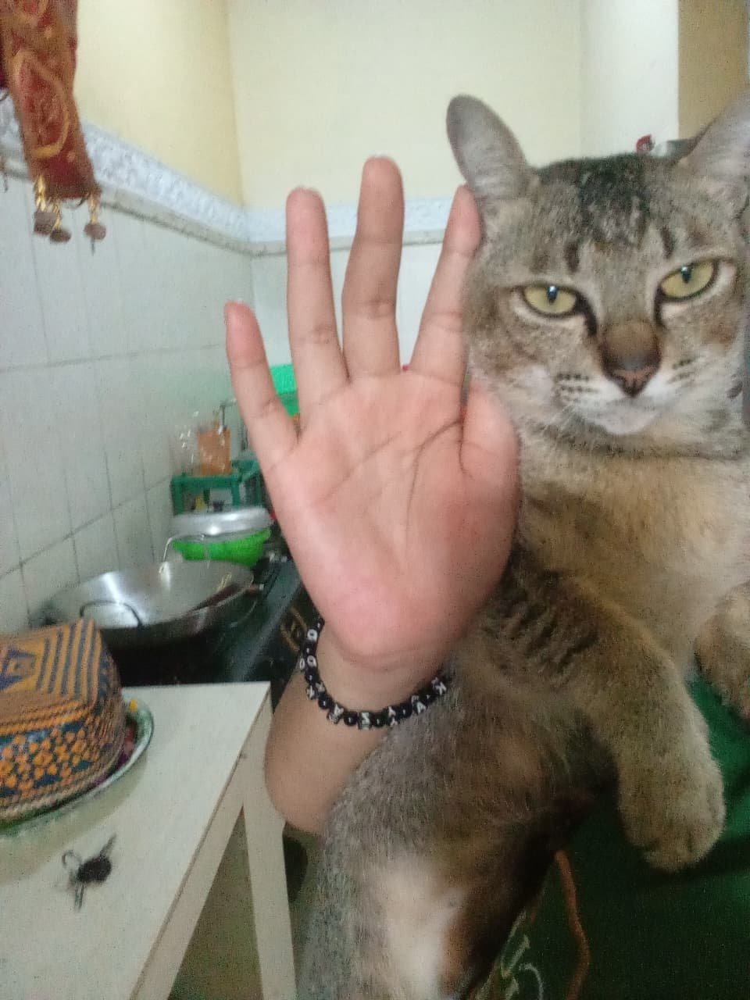
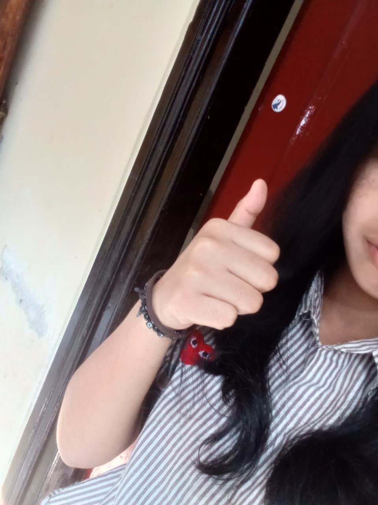
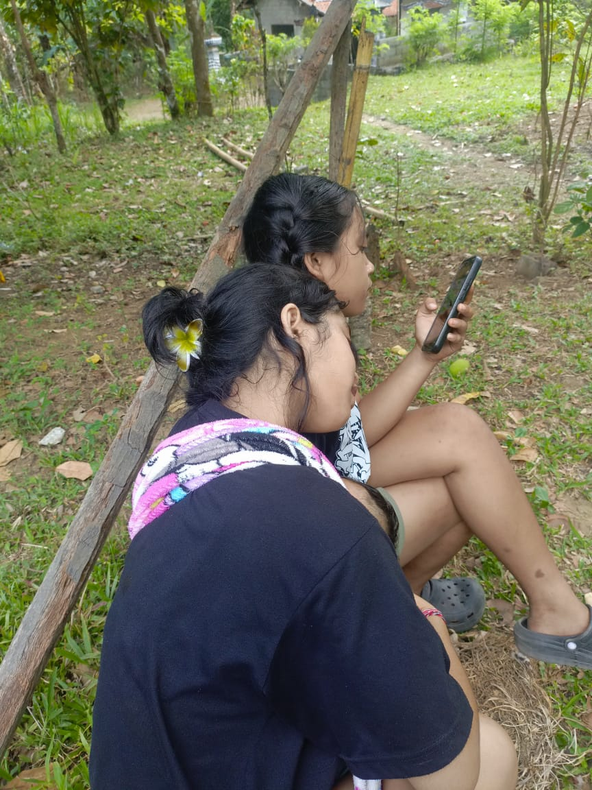
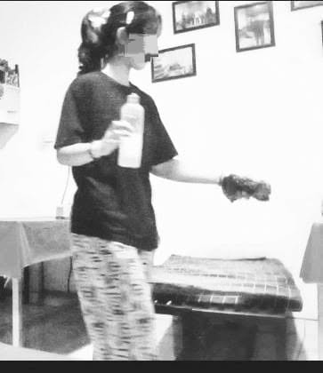
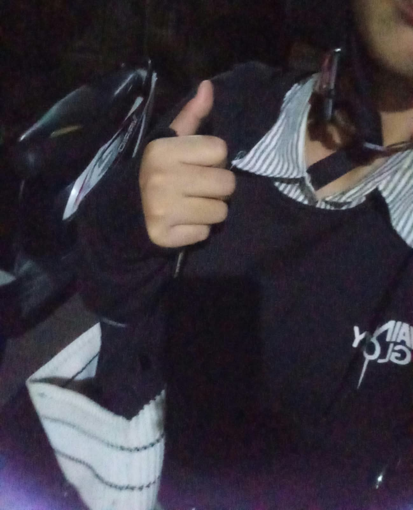

Unfiltered Moments with Sena
Scroll ke bawah untuk memunculkan foto-foto candid dia satu per satu.

High Five Bareng Kucing 🐾
"Muka kucingnya pasrah banget diajak high five wkwk. Dari semua foto random, ekspresi foto ini juaranya."

Pose Jempol Andalan 👍
"Tiap kali bingung mau gaya apa pas difoto, refleksnya pasti ngacungin jempol. Simple, khas, dan ga pernah gagal bikin senyum."
Ekspresi Manyun 10/10 😗
"Poni depan + bibir manyun bebek. Mode kalau lagi pura-pura kesel atau ngambek tapi sedetik kemudian ketawa lagi."

Nyender Santai di Luar 🌸
"Ada bunga kamboja nyelip di rambut, santai nyender di rumput. Foto yang suasananya paling adem dan paling nyaman."

Ketangkep Bawa Jajan 🥨
"Mode rumah paling jujur: jalan bawa botol minum sama cemilan di tangan. Candid natural tanpa jaim sama sekali."

Night Ride Jempol Part 2 🛵
"Pake helm di tengah dinginnya angin malam, dan jempol andalannya ga ketinggalan! Momen jalan bareng yang selalu seru."
Candid Motion • 10 Nov
Video snippet tanpa filter
Morning Clip • 11 Nov
Momen random yang terekam
Things that immediately remind me of you:
Es Kopi / Matcha Dingin
Tiap kali ngelewatin coffeeshop, langsung keinget pesanan wajib dia yang ga pernah ganti.
Aroma Hujan Sore
Pas hujan turun, hawanya cocok banget buat dengerin cerita-cerita random dia.
Stiker Kucing Absurd
Tiap nemu stiker WhatsApp meme kucing bego, refleks mau langsung forward ke dia.
Jam 01:00 Pagi
Waktu resmi di mana dia tiba-tiba aktif nanya hal paling di luar nalar manusia.
The Unofficial Mixtape
Pilihan lagu-lagu yang pas banget nemenin momen bareng dia. Pilih track favorit di bawah:
1. A Year Ago
James Arthur • Acoustic
Klik lagu mana pun untuk memutar di kaset • Musik lo-fi melodi santai
P.S.
"Ga perlu status yang bikin ribet, yang penting bisa terus ketawa bareng, saling dengerin, dan tetep jadi orang favorit satu sama lain."
• End of Journal Volume 1 •